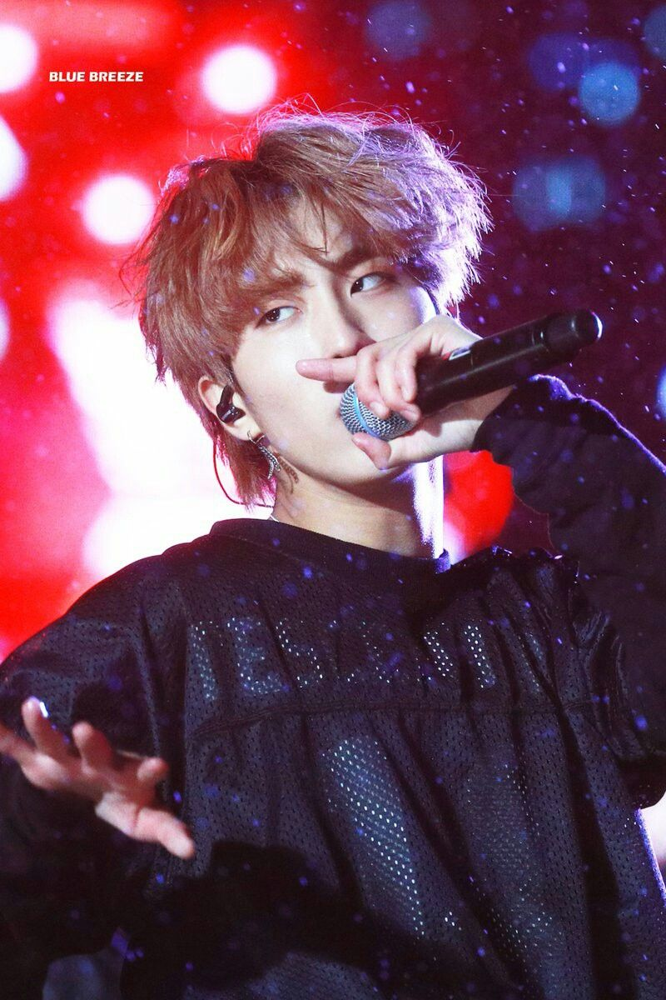
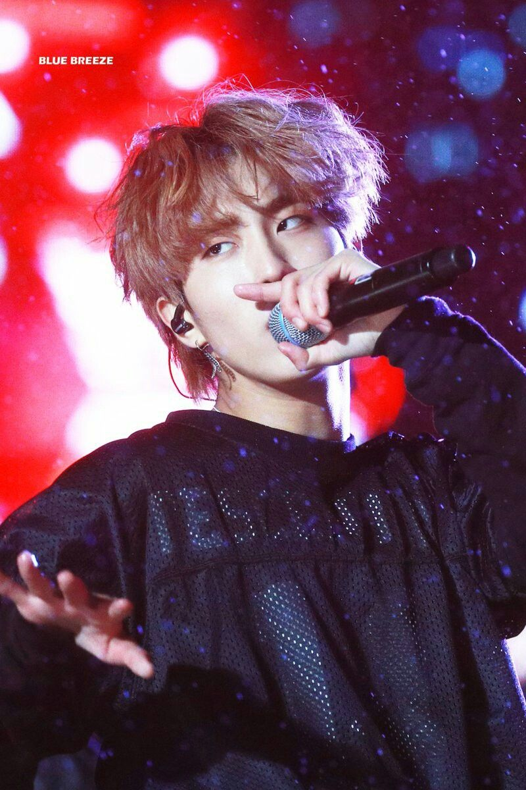

3Racha is a K-Rap group, made from the rappers of the Kpop group Stray Kids under the label JYP Entertainment
3Racha first put out music in January of 2017, before they debuted Stray Kids. CB97 personally chose the two other rappers to be in this group with him. CB97, J.One, and SpearB have all written and composed all their songs themselves, putting out music they wanted to make without interference from any outiders. 3Racha can currently only be found on Youtube and SoundCloud.
My personal top three favorite songs of their would be
Start Line-A song of the fear and excitment of ending one chapter in your life and starting the other.
☀Lyrics☀
Matroshyka- A song that is them syaing they are here to stay, no matter what people throw at them they won't just give up and disappear. ☀Lyrics☀
Wow- This song is one of my favorites because of how embarrassed 3Racha are now when listening back on that song. The whole song is them trying to flirt with a girl but it really is quite cringey and dumb, both are the reasons I love it. ☀Lyrics☀☆their reaction, skip to 3:10.☆


 
